AI analysis · SeedSigner
An AI analysis of how SeedSigner turns a photograph into a seed phrase. Measured on instrumented builds of the shipped release, the capture path byte-identical to stock, on four physical devices, from the first preview frame to the final photograph. Every claim is reproducible, and the raw captures are published so you can check them.
Updated 2026-08-09 · what changed
A normally lit scene provides thousands of times the bits of entropy that a seed needs.
This document explains what the camera contributes, what the measurements found, and what you have to do yourself. It is written for a person deciding how to use the device, and everything you need in order to generate a seed safely is here.
The measurements themselves, the methods that produced them, the full release history, every concern raised with its disposition, and what was not verified are in a companion document: data and methodology. It takes an AI-first approach, organized for checking claims one by one rather than for reading straight through. Work through it yourself if you want to, and if you would rather have a claim on this page checked than take it on trust, pointing a model at it is the quickest route.
Reviewed at tag 0.8.7, commit e0a80d4b. SeedSigner builds seed
entropy as a running SHA-256 chain in
tools_views.py,
folding in four inputs in order:
| # | Input | Source |
|---|---|---|
| 1 | CPU serial number | L151–158 |
| 2 | time.time() | L161 |
| 3 | Live preview frames, a rolling window of up to 50 | L165–167 |
| 4 | The full-resolution final image | L170 |
The first two inputs contribute almost nothing. SeedSigner OS has no real-time
clock and no network, so the system clock starts at zero every boot. time.time()
returns fractional seconds since power-on (e.g. 123.4567891). Its unpredictability is
therefore the sub-second timing of a button press plus however long the user took to reach the
feature: bounded, and not something to lean on. The CPU serial is a fixed per-device value and not
secret. The code's own comment calls this “modest entropy”, which is fair. The
security of this feature rests on inputs 3 and 4.
Those two carry everything, and the raw quantity they hand over is not small. On the standard 240-pixel display:
| Stage | Resolution | Format | Bits each |
|---|---|---|---|
| Preview frames (up to 50) | 240 × 240 | RGBA, 32 bits/px* | 1,382,400* |
| Final image | 480 × 480 | RGB, 24 bits/px, JPEG-decoded | 5,529,600 |
* Preview frames are stored and hashed as RGBA, but the alpha channel is a constant 255 in every pixel of every frame: it never varies, so it can never carry anything. The count keeps only the 24 RGB bits per pixel that can.
Fifty preview frames at 1,382,400 bits each, plus the final image, is 74,649,600 bits going into the chain. A 24-word seed needs 256.
Those are the most over-readable numbers in this document, so take them for what they are. Nothing guarantees that any of those bits carry anything of value. A frame is a container, and how much unpredictability it holds depends on what the camera was pointed at and on the state of the sensor. Establishing what the containers actually carry is what the rest of this analysis does.
SHA-256 emits 256 bits, regardless of how much data goes in. Once at least 256 bits of unpredictability have gone into it, everything beyond that is extraneous. It is still hashed and it still changes the result, but it cannot make the seed any harder to attack.
So 256 is a threshold rather than a target to beat, and a large margin does not mean a proportionally stronger seed. It means the threshold is cleared with room to spare. Anyone attacking a seed made this way is attacking 256 bits, not a multi-million-bit photograph. The margin matters at the thin end, not the thick end, which is why this analysis spends most of its time where the sensor is starved of light.
Every figure quoted here is measured against 256, the 24-word case, because it is the stricter of the two. A 12-word seed keeps only the first 128 bits of the digest (tools_views.py L172–174), so its threshold is 128 and every margin below doubles against it.
A reasonable worry about generating a seed from a camera: what if you photograph the same thing twice and get the same seed? Point the device at the same desk on two different days, or take two shots in a row without moving, and it feels as though the result might repeat.
Two photographs of the same scene are never the same photograph. Be precise about the claim: it is not that no individual pixel repeats. Plenty do. What never repeats is the frame taken as a whole. Three things drive it.
Recall that the photograph is run through SHA-256. Change a single pixel by one step and the end result is a completely different hash, which leads to a completely different seed, so nearly the same photograph is worth nothing to anyone trying to repeat your result. Only an exact byte-for-byte match would do it.
SeedSigner releases do not save captured images. The preview frames and the final photograph exist only in memory, are fed through the SHA-256 chain, and are gone; nothing is written to the microSD card, and there is nothing on the device to read back afterward. (Verified on the reviewed release, whose OS runs entirely from RAM with no persistent filesystem.)
Every frame shown in this analysis therefore comes from a purpose-built instrumented build, modified just for the purposes of this analysis: v0.8.7 plus a small patch that writes the exact bytes the app is about to hash out to the microSD card, an instant before hashing them. The patch leaves the camera code untouched, so the bytes are precisely what a release would have hashed in the same scene. How the build is made, verified against the release, and reproduced is in the companion document.
Below are two consecutive captures of a lit bookshelf, the device resting on a table, taken back to back as fast as the hardware can capture: the second followed the first by 0.64 seconds. Nothing was moved or touched between them. These are the exact bytes v0.8.7 fed into its SHA-256 chain, dumped before hashing.
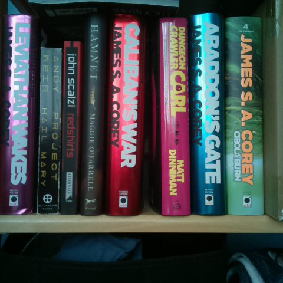
To the eye they are the same photograph. In the data, 80.82% of the frame's color values are different between the two. Subtract one capture from the other and amplify what is left, and you can see where: the entire scene subtracts away, and what remains is what changed between the two exposures. Notice that the change covers the frame rather than collecting in one place. That is the signature of per-pixel variation; something moving in the room would leave its change where the something was.
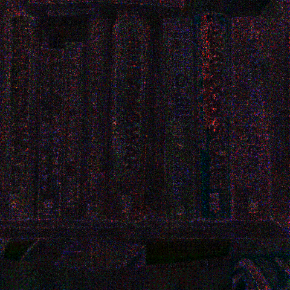
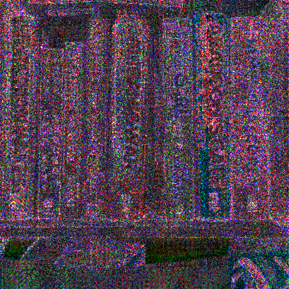
The ×40 plate shows the bookshelf itself, redrawn in variation: the brightest regions of the original photograph are where the difference is largest, and the shadowed gaps between books stay comparatively quiet. That is the randomness of the light itself, made visible. The variation grows with the amount of light collected, so each pixel's frame-to-frame change tracks how brightly lit that pixel was, and the difference image becomes a dim rubbing of the scene's illumination.
Commercial quantum random number generators have been built from exactly this: an image sensor measuring the random arrival of photons. One demonstration ran on nothing but a phone camera (Sanguinetti et al. 2014, Quantum random number generation on a mobile phone), and chip-scale descendants ship inside consumer phones today. A lit SeedSigner capture harvests the same physics.
Magnify a small patch and let the two captures alternate, and you can watch it happen: the lettering holds perfectly still while the surface crawls. 97.5% of the pixels in that crop differ between the two. Differing is a low bar, and that is the point: a pixel counts if even one of its three color values moved by a single step, and most of these moved by only a step or two. A change that slight is nearly invisible to the eye, and it is everything to a hash.
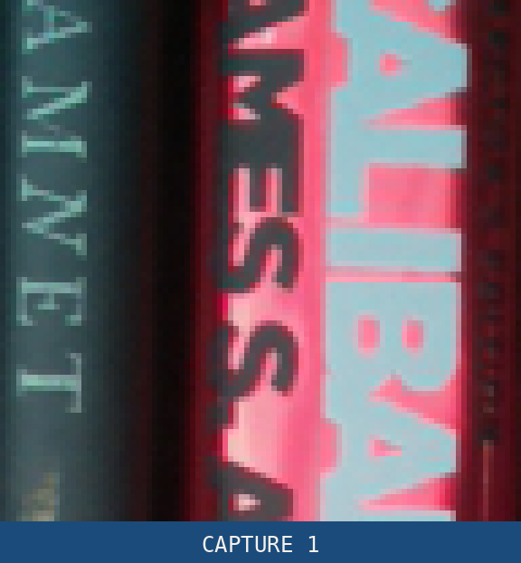
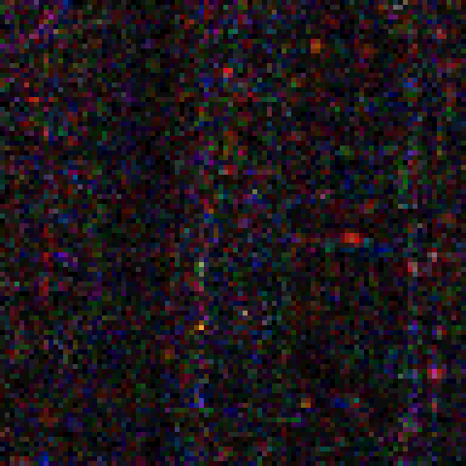
The scale of it, across the four-device lit baseline series:
That last figure is the one that answers the worry. Every final photograph taken in this work was distinct from every other, under the most favorable conditions for a repeat that could reasonably be arranged: a device that never moved, a scene that never changed, and shots taken back to back as fast as the hardware allows.
Cloudflare generates part of its production randomness from a camera aimed at a wall of lava lamps, LavaRand, in service since 2017; the first such system was Silicon Graphics's, in 1997. Those systems point a camera at a deliberately unpredictable process; the next section measures whether the choice of subject matters at all.
One scope note, because it matters later: that claim is about the final photograph. The preview frames in input 3 are a different story (section 4).
The bookshelf above is a busy scene: edges, text, texture, color. The advice that circulates for camera entropy is to photograph something like it, and the worry that circulates alongside is the opposite case. What if there is nothing to look at? Is a blank wall a weak seed?
It was measured directly. A blank white wall, lit by ordinary window light, photographed on a Pi Zero resting motionless: the maximally boring capture this feature can produce, no scene detail, no camera motion, no artificial light. These are the exact bytes the instrumented v0.8.7 build fed into its chain.
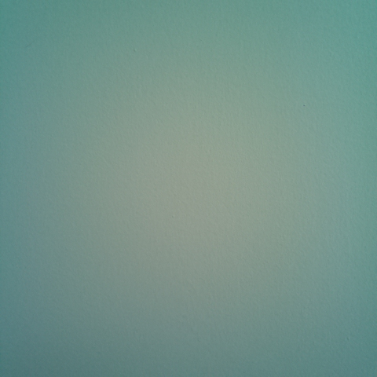
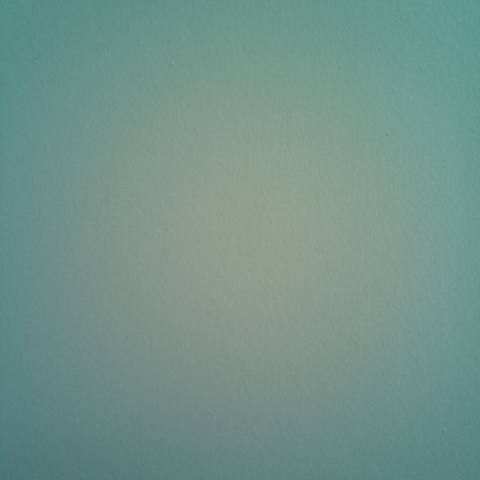
There is nothing to tell apart by looking. In the data, even this most-alike pair differs in 77.69% of the frame's color values. In the magnified crop, everything that moves is variation, because variation is all there is. And the same subtraction as before shows the whole frame at once: the wall subtracts away, and a dense field of per-pixel variation remains.
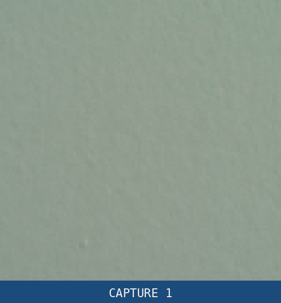
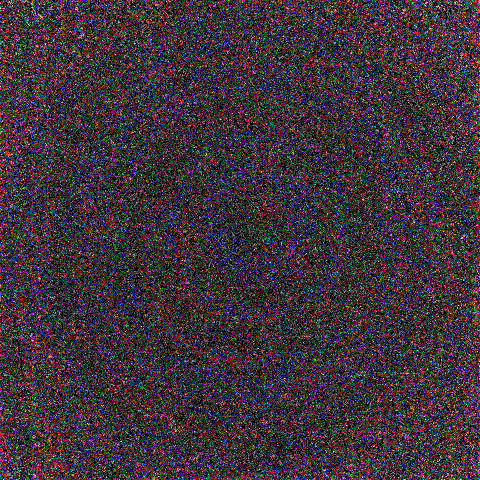
The numbers behind the plates. Like the headline figures throughout this analysis, they are the most conservative estimate this analysis computes; the methods and their limits are in the companion document.
A featureless scene is not a degenerate scene. The blank wall landed slightly above the same unit's bookshelf figure, a result that reads backwards until you look at where each scene's light is.
The wall is featureless but bright everywhere: every photosite sits deep in the photon regime (section 2), collecting its own fresh random draw of light each frame. 99.999% of the frame's byte positions changed at least once across its ten captures.
Much of the bookshelf sits in shadow, where the same mechanism runs in reverse: fewer photons arriving means less fresh variation, so the busy scene's dark patches earn almost nothing.
The rest of the gap is the evaluation itself: a built-in limit of this form of estimate, not a ranking of the scenes. The companion document works through it.
The worry about the blank wall conflates two different things, a featureless scene and a light-starved sensor, and the measurements separate them cleanly: what decides everything is whether light reaches the sensor at all, not what the light is bouncing off. The next section is about what happens when the light stops arriving.
Everything above happened in the light. This section is what the same hardware and the same code do when essentially no light reaches the sensor at all, and it is where this analysis found the things the project should fix.
To be clear about the bottom line before the detail: in this state the entropy collapses. Under the strictest floor this analysis computes, on three of the four units every measured light-blocked final image falls below the 256 bits a 24-word seed needs, and in the runs where the preview layer held nothing, the whole chain falls with it (companion document). The fourth unit's dark captures held above the line, and the best explanation the data offers is light its roomy enclosure leaked back in: an accident of the case, not a floor anything designed.
What follows is about how the collapse happens, and about a layered design quietly becoming a single layer without anything noticing.
Be precise about the condition, because “dark” undersells it: in these captures the lens was completely or effectively blocked. That is not a dim room; dimming was measured separately, one room stepped down from ordinary light to blackness: entropy thins as the scene dims and collapses as it approaches black (the companion document carries the ladder).
The few runs here where a small light leak crept in measured roughly seven to several hundred times higher than their properly blocked siblings, so everything below lives at the blackout end of the axis, not merely in low light.
The route that matters is the mundane one: face-down on a desk in ordinary shadow, no seal, no enclosure, no intent. (Deliberately engineered light seals were also tried; the plain desk produced lower figures than any of them. The companion document carries that comparison.)
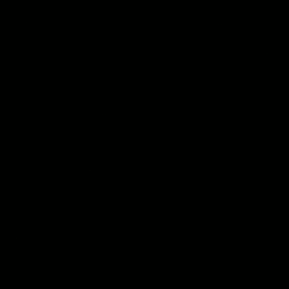
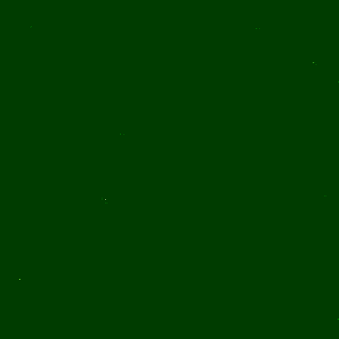
Read the amplified plate carefully, because the flat green field is not the entropy. It is the green channel sitting at exactly 1 across nearly the whole frame, a constant pedestal that amplification turns into a wash; green rises first because the sensor has twice as many green photosites. The information is in the sparse variation on top of that pedestal, and there is almost none of it left.
Subtracting this run's two most-alike captures makes the point numerically: 105 of the frame's 691,200 values differ, 0.0152%, and the run's final image measures 64 bits under the strictest floor, a quarter of what a 24-word seed needs (113 even on the optimistic most-common-value estimate). Set beside it, the lit bookshelf from section 2, at one fifth the amplification: over half a million bits against 64, on the same floor. The distance between those two plates is what light is worth.
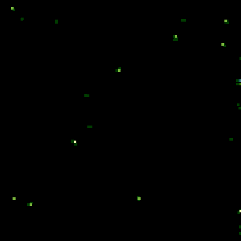
And that state is not unique: face-down desk runs on one board, across two capture rounds and separate boots, produced final images of 9, 20, 52, 64 and 118 bits under the strictest floor, each below the 256-bit requirement on its own.
Session-to-session spread under a nominally unchanged setup is enormous: the same desk position also produced 5,774 bits minutes earlier with nothing moved, a run the light test flags as contaminated by stray light, which is itself the lesson: an imperceptible leak can swing the figure several hundredfold between sessions. So these are points from a wide distribution, not a bound.
But they establish the reachable state: setting the device down lens-down on an ordinary desk can push the final photograph far below what a 24-word seed needs, with no intent and no equipment.
A final image below 256 was supposed to be what the preview layer exists for: up to 50 more frames, each a separate exposure, chained ahead of it. These captures record what that layer actually held, and with the lens blocked the answer is: almost nothing, and sometimes exactly nothing.
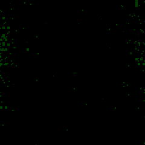
6f77f852…) is computable from the panel size alone.The left plate is one of only four live frames in that run's 50-slot window, and it looks like the amplified final image for a reason: it is the same near-binary green plane, 99.4% of its pixels at green = 1, the whole frame one rounding event, the green channel crossing the pipeline's threshold everywhere at once.
Of the other 46 slots, 45 held a pure-black constant frame, byte for byte, and one held a cached repeat of a live frame. The right plate is why that distinction matters: two adjacent live frames differ in just 820 of their color bytes, and that sparse flicker is the whole of the layer's genuine per-read contribution.
The mechanism: with essentially no signal arriving, the preview path quantizes the frame all the way to zero. When that happens, a slot in the window holds pure black, every value identical, and an attacker can compute that frame, and its contribution to the chain, from the panel dimensions alone. Hashing a value the attacker already knows adds zero unpredictability, no matter how many times it is hashed. In the measured dark windows on the standard panel, 45 to 50 of the window's up-to-50 slots held that constant or a repeat.
On one of the three boards it went all the way: in six out of six lens-blocked runs, across two boots, all 50 slots were the known constant, and the preview layer contributed exactly zero. The seed rested on the final image alone, and the thinnest of those runs measures roughly 36 bits against the required 256 under the strictest floor this analysis computes. Even the optimistic most-common-value estimate reads just 389, a 1.52× margin (companion document, section 4). The dim ladder reproduced the same all-constant window with the lens open, in a totally dark room, on a different board: light starvation is what does it, not the blocking.
Three findings sharpen this from an anecdote into a design problem:
In this blocked-lens condition, what the screen shows tells you nothing about what the capture carried. In our testing the display simply does not track the measurement: pure black screens came from the highest-measuring dark captures, and faint noisy images from the lowest. The working is in the companion document.
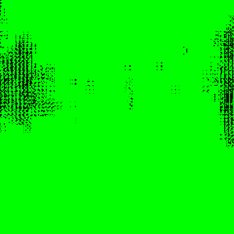
What would actually fix it (for the project, not the user): append the frame before checking the button, so a held button cannot skip the window; check that the window's frames are distinct, which catches every repeated-frame failure measured here; and check that light is actually reaching the sensor, because the dim-ladder data shows distinct frames can still carry almost nothing. Appending more frames is no fix on its own: with the lens blocked the appended frames are the known constant. The companion document carries the full accounting and the measured evidence behind each recommendation.
The button-handling half was filed upstream as seedsigner PR #990, and the distinct-frames half as seedsigner PR #991, which requires a full pool of distinct preview frames before the final capture (both open, not merged, when these links were added). The light-level check remains a recommendation.
Scope, stated honestly in both directions: this is a real design finding, not a break. No specific seed was ever demonstrated recoverable, and the state in question (face-down in shadow, or a held button) is one an ordinary capture has no reason to visit.
But under the strictest standardized floor, the measured final images in that state do not clear the requirement, and the chains that rested on them alone do not either, with margins decided by per-unit accidents and session-to-session luck spanning a factor of a hundred or more. The design's redundancy argument does not hold there, and nothing on the device notices.
Darkness is not a condition to survive on luck; it is a condition to detect and refuse.
Everything above compresses to one instruction and two habits.
The measurements say the camera path supplies abundant entropy in the light and cleared the requirement everywhere it was measured. They cannot say your particular seed did, and no measurement ever can. That gap is worth stating precisely, because image entropy sits in a different trust relationship from the other ways SeedSigner can make a seed, and the difference is structural rather than a matter of code quality.
Trusting a camera-generated seed is really a chain of three:
Steps 1 and 2 are done once and are the same for everyone. Step 3 is the only per-capture control, and only you can ever perform it.
The obvious fix would be for the device to write out the bytes it hashed, so someone could check them elsewhere. Consider what that would take. The entropy inputs are enormous: 691,200 bytes for the final image, plus fifty preview frames at 230,400 bytes each, roughly 12 MB in total. SeedSigner's only data channels are the camera coming in and the screen going out, and a QR code carries a few kilobytes; 12 MB is upwards of four thousand of them. The only practical channel would be the microSD card.
And that image data is your secret. It is what the seed is derived from, so holding it is effectively holding the seed. SeedSigner is built never to write a secret to persistent storage. On the reviewed release the entropy inputs stay in RAM and are released once the seed is derived.
Image entropy puts an extraordinary quantity of unpredictability into your seed. The price is that you can only verify the process, but not the individual outcomes.
Dice differs on exactly this point, and it is the only difference that matters here: rolls are small enough to write on paper, so an individual dice result stays externally checkable forever, while the camera data exists nowhere but the device that hashed it (the dice analysis works through that method).
None of which makes camera entropy weaker than dice. A lit capture feeds the chain orders of magnitude more unpredictability than a dice session does. But once a camera seed is generated, no one can go back and confirm anything about it, which is why the process verification above is the whole of what can be offered.
Every figure quoted here was computed from raw camera frames that are published alongside this document, roughly 470 MB across 42 capture runs on 4 physical devices, exactly as the device handed them to SHA-256. Nothing rests on a number you have to take on trust.
Readers regularly ask whether this entropy has been evaluated against NIST's standards. There are two different documents behind that question, and they answer differently.
SP 800-22, the statistical test suite people usually mean, tests the output of a generator, and it cannot help here in either direction: everything SeedSigner does ends in SHA-256, whose output passes those tests no matter how weak the input was, while a raw photograph fails them no matter how strong it was, because photographs have structure. NIST itself is on record that the suite is not for assessing entropy sources.
SP 800-90B, the entropy-source standard, is the one that applies, and its estimator suite has been run, with NIST's own reference tool, on every final-image capture series behind this analysis. The results are what the figures above already reflect: lit scenes clear the requirement roughly two thousand times over on the strictest standardized floor, and light-starved captures fall below it on three of the four devices tested (section 4). The full method, the per-series results, and what remains unmet of the standard's full validation regime (restart testing, a documented physical noise model, runtime health tests; this analysis claims no 90B validation) are in the companion document, section 4.
The working is in the companion document, data and methodology: the canonical figures with the estimator behind each one, the preview-window structure of every dark run, how the instrumented builds were made and provenance-locked to the release, every release from 2021 checked one by one, every concern raised with its disposition and the weakest point of that disposition, what was not verified, and the commands that recompute every number from the published frames.
It takes an AI-first approach: dense, declarative, and ordered so a reviewer can work claim by claim rather than follow an argument. That structure is what makes it cheap to check, and pointing a model at it is the fastest way to get an answer. It is also perfectly readable if you would rather go through it yourself.
Corrections and challenges are welcome, particularly on the measurements. There is no published external review of this path that we are aware of: no independent measurement and no third-party reproduction of these figures. The raw captures ship precisely so that can change. Work that contradicts these numbers is more useful than work that confirms them. When responding, cite the revision you reviewed: the reporting guidance explains what to record and why it matters once these documents are revised.